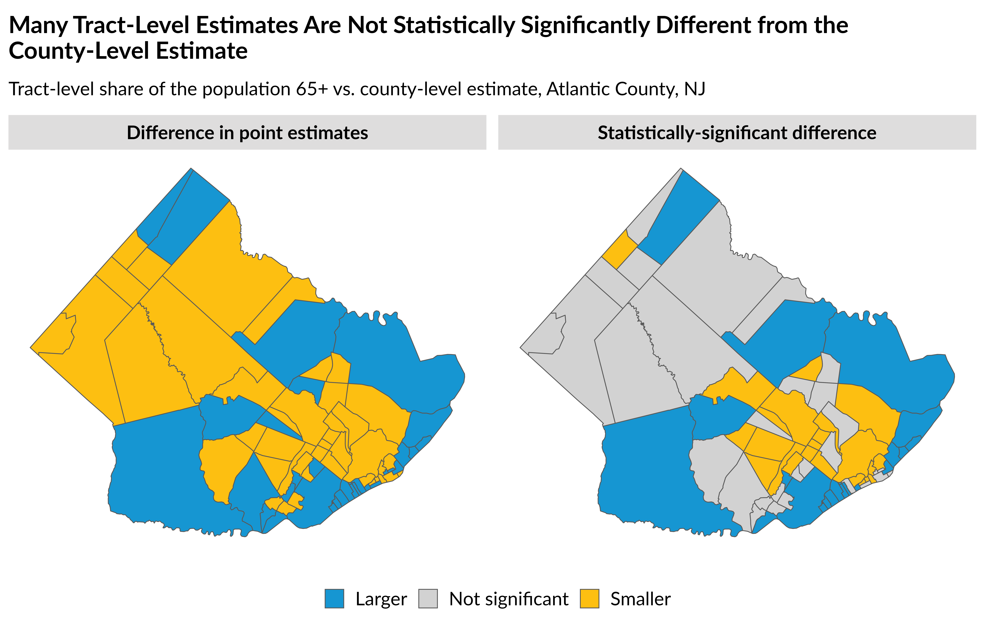
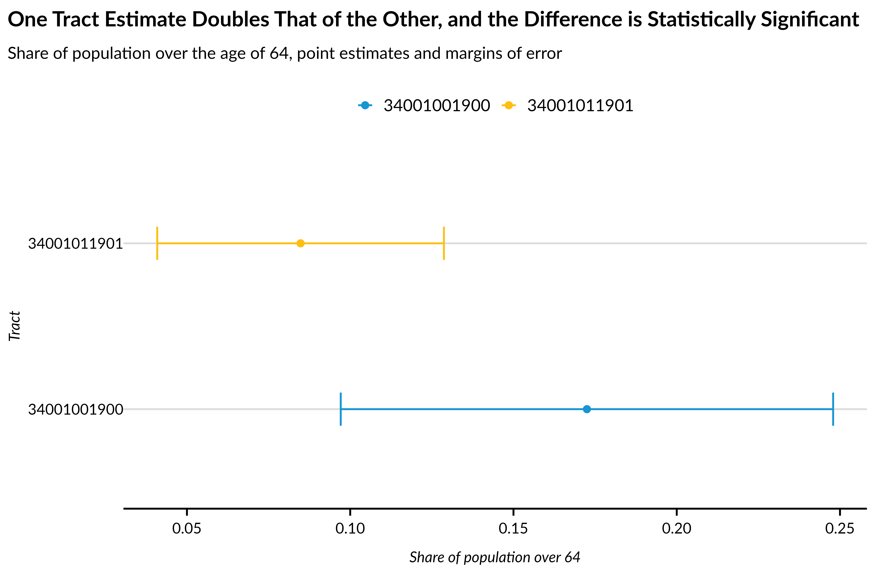

Drawing Inferences while Accounting for Survey Error
quantified-survey-error.RmdBecause data from the American Community Survey are–you guessed it–survey data, they are subject to sampling error. Sampling error means, in brief, that when we extrapolate from our sample–say, 200 households out of a neighborhood population of 1,000 households–we make assumptions that the sample is representative of the population.1 These assumptions are inherently imperfect, and so the estimates we use based on sample responses have a quantifiable amount of error associated with them.
Using the known error around an estimate allows us to better say what we do and do not know about the population. Without this information, we might say, based on our sample of 200 households, that 5% of neighborhood households are housing cost-burdened renter households. But when we factor in the error around the estimate, we might say something more nuanced, like: “Between 3.5% and 6.5% of households are housing cost-burdened renter households.” This reflects that survey estimates are more accurately thought of as a range of likely values rather than a single absolute value.
Using quantified error around survey estimates will allow us to do three (at least) critical classes of activities to improve our inference-making with these data:
Evaluate estimate quality to inform whether we should, for example, aggregate our data to create more precise estimates or select a different measure or data source.
Conduct statistical significance testing to evaluate whether an estimate is statistically significantly greater than another estimate(s).
Report and visualize error to our audiences so that they can understand the limitations of the data.
Below, we illustrate how urbnindicators facilitates each
of these three classes of activities. But first, a very quick overview
of measures of error.
Margins Of Error (MOE) are our baseline measurement of error. The ACS reports MOEs at a 90% confidence level, which enables us to say something like: “20% (±5%) of households in the neighborhood have no access to a car.” (And then we should include, either as a footnote or in the body of the document, that this and other MOEs are calculated at the 90% confidence level). What this means in practice is that if we were to repeat 100 times–using exactly the same methods–our approach to calculating this estimate, 90 of those times we would produce a parallel estimate between 15% and 25%, while 10 of those times, our estimate would fall outside this range.
Standard Errors (SE) are derived from MOEs by dividing the MOE against a confidence level-related value. 90% SEs are calculated by dividing an MOE by 1.645.
Coefficients of Variation (CV) relate error to the size of the estimate. They are calculated by dividing the SE by the estimate and then multiplying by 100. CVs are helpful because they provide a unit-agnostic measurement of variable quality: a CV of 40 for a given variable means the same thing as a CV of 40 for another unrelated variable, whereas MOEs and SEs are not directly comparable across variables.
Evaluate Estimate Quality
MOEs allow us to assess whether estimates have problematically large errors. While there’s not a right-or-wrong threshold for what constitutes a problematic MOE, a common approach is to calculate the coefficient of variation (CV = SE / estimate * 100, where SE = MOE / 1.645) and use thresholds between 30 and 40.
As shown below, variables that rely on larger sample sizes tend to have smaller MOEs. Typically, there are two strategies to reduce error: (1) aggregate estimates, either across geographies or across variables, or (2) use larger geographies.
acs_df_county = compile_acs_data(
years = c(2024),
tables = "age",
geography = "county",
states = "NJ")
acs_df_tract = compile_acs_data(
years = c(2024),
tables = "age",
geography = "tract",
states = "NJ",
spatial = TRUE)
## derive CVs from MOEs for quality evaluation
plot_df = bind_rows(
acs_df_county %>% mutate(geography = "County"),
acs_df_tract %>% mutate(geography = "Tract")) %>%
st_drop_geometry() %>%
select(
geography,
c(matches("^age.*percent$") & matches("(_6|_7|_8)")),
c(matches("^age.*percent_M$") & matches("(_6|_7|_8)"))) %>%
pivot_longer(-geography) %>%
mutate(
base_var = str_remove(name, "_M$"),
type = if_else(str_detect(name, "_M$"), "moe", "estimate")) %>%
pivot_wider(
id_cols = c(geography, base_var),
names_from = type,
values_from = value,
values_fn = list) %>%
tidyr::unnest(c(estimate, moe)) %>%
mutate(
cv = (moe / 1.645) / estimate * 100,
cv = if_else(is.infinite(cv), NA_real_, cv),
name = base_var %>%
str_replace_all(c("_" = " ", "percent" = "(%)")) %>%
str_remove_all("age") %>%
str_squish() %>% str_trim(),
plot_title = str_c(geography, ": ", name))
factor_levels = plot_df %>%
arrange(name) %>%
distinct(plot_title, .keep_all = TRUE) %>%
pull(plot_title)
plot_df %>%
mutate(
plot_title = factor(plot_title, levels = factor_levels, ordered = TRUE)) %>%
ggplot() +
geom_histogram(
aes(x = cv), fill = palette_urbn_main[1], bins = 50) +
geom_vline(xintercept = 30, linetype = "dashed") +
facet_wrap(~ plot_title, ncol = 2, scales = "free") +
scale_x_continuous(limits = c(0, 150)) +
guides(fill = "none") +
theme_urbn_print() +
theme(axis.text.y = element_blank()) +
labs(
x = "CV (derived from MOE)",
y = "Distribution",
title = "County CVs are Smaller than Tract CVs\nCVs for Wider Age Ranges are Smaller than CVs for Narrow Age Ranges",
subtitle = "Coefficients of variation at the county and tract levels for various age groupings")
Conduct Statistical Significance Testing
Statistical significance testing is critical to understanding whether estimates are meaningfully different. Estimates that may appear substantially different in isolation are frequently, especially at smaller geographies, not statistically significantly different because their errors are so significant.
We’ll illustrate this numerically and demonstrate the impacts of
accounting for error when visualizing data, leveraging
tidycensus::significance() to conduct our actual tests.
Here, we’ll compare each tract-level value within a single county to
that of the corresponding county.
plot_data = acs_df_tract %>%
filter(str_detect(NAME, "Atlantic")) %>%
select(GEOID, matches("age_over_64_percent")) %>%
mutate(county_geoid = str_sub(GEOID, 1, 5)) %>%
left_join(
acs_df_county %>%
filter(str_detect(NAME, "Atlantic")) %>%
select(GEOID, matches("age_over_64_percent")) %>%
rename_with(
.cols = matches("age_over_64_percent"),
.fn = ~ str_c(.x, "_county")),
by = c("county_geoid" = "GEOID")) %>%
mutate(
naive_difference = case_when(
age_over_64_percent > age_over_64_percent_county ~ "Larger",
age_over_64_percent < age_over_64_percent_county ~ "Smaller",
TRUE ~ "Equal"),
significance = significance(
est1 = age_over_64_percent,
est2 = age_over_64_percent_county,
moe1 = age_over_64_percent_M,
moe2 = age_over_64_percent_M_county,
clevel = 0.9),
statistical_difference = case_when(
significance == FALSE ~ "Not significant",
significance == TRUE & age_over_64_percent > age_over_64_percent_county ~
"Larger",
significance == TRUE & age_over_64_percent < age_over_64_percent_county ~
"Smaller"))
plot_data %>%
select(GEOID, naive_difference, statistical_difference) %>%
pivot_longer(cols = -c(GEOID, geometry)) %>%
mutate(
name = if_else(
name == "naive_difference",
"Difference in point estimates",
"Statistically-significant difference")) %>%
ggplot() +
geom_sf(aes(fill = value)) +
scale_fill_manual(
values = c(
"Larger" = palette_urbn_main[1] %>% as.character(),
"Smaller" = palette_urbn_main[2] %>% as.character(),
"Not significant" = palette_urbn_main[4] %>% as.character())) +
theme_urbn_map() +
facet_wrap(~ name) +
theme(legend.position = "bottom", legend.direction = "horizontal") +
labs(
fill = "",
title = "Many Tract-Level Estimates Are Not Statistically Significantly Different from the County-Level Estimate" %>% str_wrap(90),
subtitle = "Tract-level share of the population 65+ vs. county-level estimate, Atlantic County, NJ")
significance_test_data = plot_data %>%
filter(GEOID %in% c("34001011901", "34001001900"))
## TRUE
significant_difference = significance(
est1 = significance_test_data %>%
filter(GEOID == "34001001900") %>%
pull(age_over_64_percent),
est2 = significance_test_data %>%
filter(GEOID == "34001011901") %>%
pull(age_over_64_percent),
moe1 = significance_test_data %>%
filter(GEOID == "34001001900") %>%
pull(age_over_64_percent_M),
moe2 = significance_test_data %>%
filter(GEOID == "34001011901") %>%
pull(age_over_64_percent_M))
plot_data %>%
filter(GEOID %in% c("34001011901", "34001001900")) %>%
ggplot(aes(y = GEOID, x = age_over_64_percent, color = GEOID)) +
geom_point() +
geom_errorbar(
aes(
xmin = age_over_64_percent - age_over_64_percent_M,
xmax = age_over_64_percent + age_over_64_percent_M),
width = 0.2) +
theme_urbn_print() +
labs(
x = "Share of population over 64",
y = "Tract",
title = "One Tract Estimate Doubles That of the Other, But There is No Statistically Significant Difference" %>% str_wrap(100),
subtitle = "Share of population over the age of 64, point estimates and margins of error")
Report and Visualize Error
The ability to quantify error both allows us to conduct statistical significance testing and to directly report error, either in text and/or via visualizations. As illustrated above, MOEs can be reported directly alongside estimates in the text as parentheticals: estimate (±MOE). A similar approach can be employed for statistical significance testing, with statistical significance being notated as a “*”, for example, or via a longer “p < .10” statement.
For most such cases, it will be helpful to provide some guidance to your audience about what the MOE/statistical significance means and how it should shape their interpretation of point estimates, such as via a footnote/endnote, through a call-out box, or in a section on your methods.
In tables, you can either present MOEs/statistical significance in the same cell as the point estimates or via a companion column. Depending on your goals, CVs may be used to suppress altogether some estimates within a table, though this approach also has limitations (e.g., it may lead to obscuring important but small-population groups or geographies, not just in a single table but across many such tables). If you’re struggling with presenting results because many estimates are imprecise, this may be an indication that you need to re-evaluate your choice of geography and/or explore opportunities for collapsing variables to obtain more precise estimates.
There are myriad approaches to visualizing error. Generally, the use
of error bars (look no further than the visual immediately above) should
be avoided, as research consistently shows that most audiences do not
interpret such bars accurately. The excellent
library(ggdist) provides an array of methods for different
styles and methods of visualizing error, while visualizing statistical
significance relative to a benchmark (see the map above) is another
common approach.
Limitations of Calculated Errors
MOEs for raw ACS estimates–i.e., those that are directly reported by
the Census Bureau–should be accurate measurements of survey error. This
is because these errors are calculated after accounting for estimate
covariance using individual-level responses (see footnote 1). However,
the calculations of error for derived estimates–that is, estimates that
library(urbnindicators) calculates behind the scenes using
two or more raw ACS estimates are imperfect for at least two
reasons:
Errors for derived estimates do not account for covariance;
Errors for derived estimates are calculated using (Census Bureau-recommended) formulae that inherently inflate error when multiple variables are combined. For example,
age_over_64_percent(see the first figure above) is calculated by summing numerous raw estimates to produce the numerator and then dividing this numerator by the table universe. As shown, this process produces a much more precise estimate than is available for any of the component variables used to calculate the numerator–but the error for this newly-derived estimate is likely larger than the directly-calculated (and more accurate) error when using individual-level data.
So what to do?
The Census Bureau produces a set of auxiliary variance replicate estimate tables (VRE) that allow users to calculate precise errors akin to those calculated using individual-level responses. Users focused on the most precise methods should consider whether these VRE tables are appropriate for their needs. Unfortunately, these tables are only produced for a small subset of all ACS tables, and the VRE tables are large and non-trivial to work with.
A similar option that may be appropriate for some use-cases is to
work with the the individual-level data, which is often referred to as
the “Public Use Microdata”. These data comprise respondent-level ACS
data as well as large set of survey replicate weights that can be used
to calculate more accurate margins of error and related error
statistics. However, these data are much more cumbersome to work with
than the tabulated estimates tables returned by
urbnindicators, and in order to protect respondent
anonymity, the microdata can only produce estimates at geographies of
~100,000 people or more (mid-sized cities and counties, as well as
special statistical geographies called Public Use Microdata Areas, or
PUMAs).
If the tabulated estimates remain the best solution for your use
case, the codebook that is returned alongside the data from
compile_acs_data() can inform users’ understandings of the
number of raw estimates used to calculate a given variable, which in
turn can shape their thinking around the precision or possible
imprecision of associated errors.